Pierre Marc Obert (1775‑1831)
marié à Marie Françoise Ledoux (1786‑1871)
Noël Joseph Obert (1751‑1813)
marié à Marie Reine Haldegonde Thibaut (1752‑1813)
10ᵉ génération
Noël Bernard Obert (1722‑1788)
marié à Marie Anne Bocheret (1726‑1796)
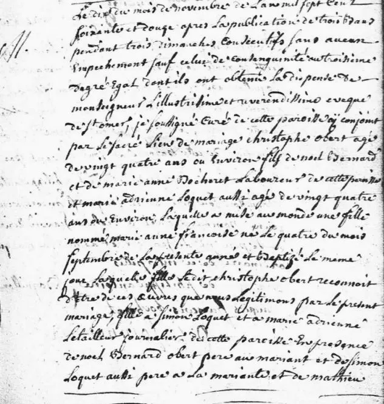
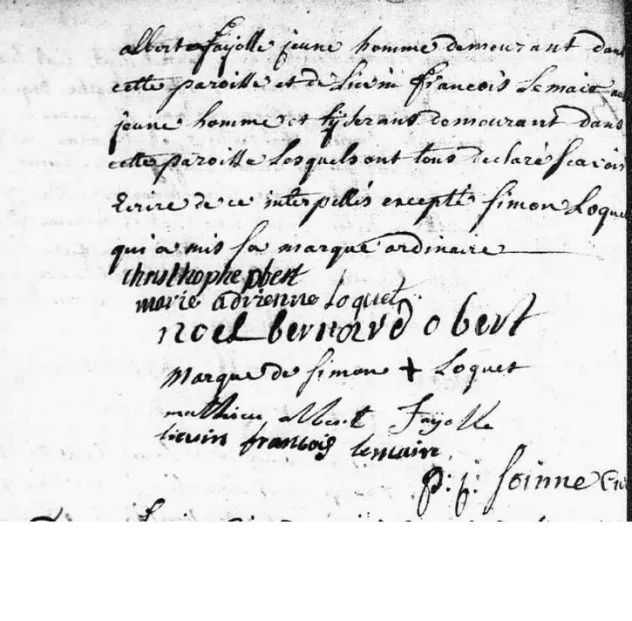
Ancêtres Obert – 17ᵉ et 18ᵉ siècles
Obert Noël, né en 1681 à Helfaut — décédé le 30/04/1775 à Helfaut.
Marié le 11/02/1722 à Saint‑Omer avec Marie Jeanne Merlen, née en 1677 à Helfaut — décédée le 10/07/1739.
11 FÉV 1722 — Mariage à Saint‑Omer, St‑Sépulcre
Voir l’acte
Obert Christophe, né en 1657 à Helfaut — décédé vers 1725 à Helfaut.
Marié avec Lewicq Jeanne (1661‑1710).
Obert Jacques (laboureur), né en 1610 — décédé le 22/12/1690 à Helfaut.
Marié avec Thuillier Marie Jeanne, née en 1620 à Lederzeele — décédée en 1690 à Helfaut.
Famille Marcotte – 16ᵉ et 17ᵉ siècles
De Marcotte Saincte, née vers 1580 à Helfaut — décédée vers 1648‑1650.
Mariée vers 1605 à Helfaut avec Obert Jean (laboureur à Watersdale, paroisse de Seninghem), né le 1/07/1580 à Helfaut — décédé vers 1648.
Rente n°20 — 10/12/1610 — Jehan Obert, laboureur, demeurant à Waterdalle, paroisse de Seninghem, et Saincte Marcotte, sa femme…
Reconnaissance du 27/03/1648 :
Anthoine Cocquempot, curateur aux biens vacants par le trépas de Jean Obert et Sainte Marcotte sa femme ;
rente du 19/11/1627 par les dits Obert et sa femme, et Lucq Obert leur fils à marier, au profit du Collège de l’Église et Abbaye de Saint‑Bertin.
Marcotte Alexandre (1545‑1613)
Marcotte Alexandre, né le 7 janvier 1545 à Bayenghem‑lès‑Éperlecques — décédé vers avril 1613
marié avec Marie Leverd (Levert), née vers 1547 — décédée vers 1610
Descendance de Alexandre Marcotte :
Adrienne Marcotte — mariée avec Gilles Bedague
Marie Marcotte — mariée en 1613 avec Pierre Lecras
Bertin Marcotte — né vers 1589
Robert Marcotte — laboureur à Bayenghem‑les‑Seninghem
Jacques Marcotte — curé de Tilques
Saincte Marcotte — mariée avec Jehan Obert
Fiefs de Bayenghem‑les‑Seninghem (1601)
Rapport de fiefs — 1601 :
Marie Levert, ayant le bail et gouvernement de ses enfants qu’elle eut de feu Alexandre Marcotte,
demeurant à Bayenghem‑les‑Seninghem, tient audit nom 2 mesures de terre…
Manoir Lannoy d’Affringues
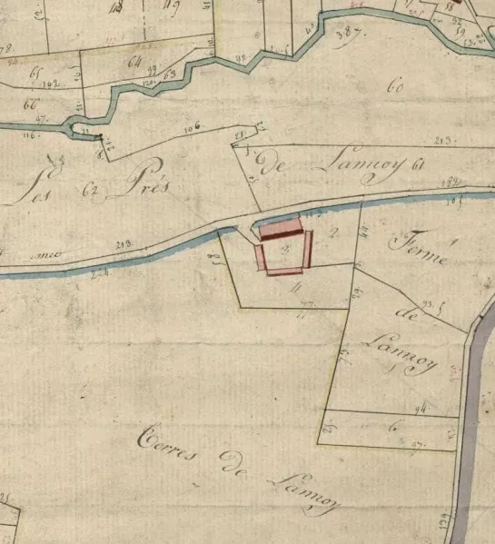
Le manoir aujourd’hui est une propriété privée (photo en attente d’autorisation).
Famille Parenty
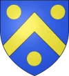
De Parenty Jehanne (Jeanne) — épouse de Marcotte de Samette Baudouin (1440‑1495).
Marie Du Blaisel (1467‑1485) — épouse en 1484 de Parenty Jehan dit “le jeune” (1445‑1518).
De Parenty Tassart (1410‑1492), possédait les fiefs de la Boucherie, de Baillon, et de Brugnobois.
Famille Du Blaisel
Jacques Du Blaisel, né vers 1440 — décédé le 06/03/1482 à Surques.
Dit “le Canu”, “le Camus”, écuyer, seigneur du Haut & Bas Blaisel, receveur de Doudeauville.
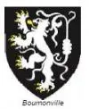
Époux de Marie de Bournonville (vers 1450 — 1482).
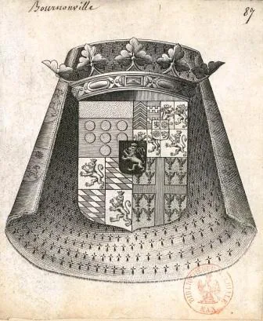
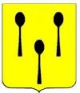
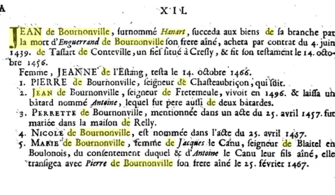
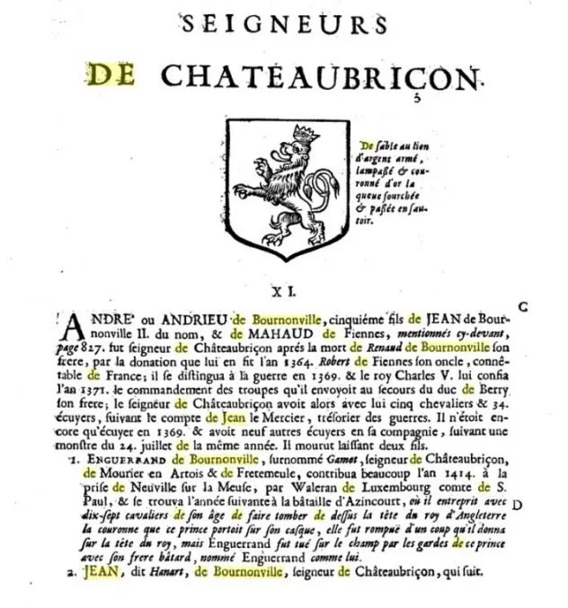
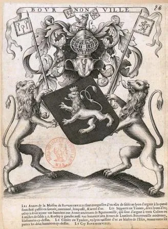
Famille de Bournonville – Seigneurs de Château-Briçon
Marie de Bournonville
° 1450 (ou 1435 ?) — + 1482
Épouse en 1467 Jacques du Blaisel
dit « Le Camus » ° 1440 (ou 1410, 1420 ?) — + 06/03/1482 (Surques, 62)
Écuyer, seigneur du Haut & Bas Blaisel, comte de La Roche, receveur de Bournonville et Doudeauville.
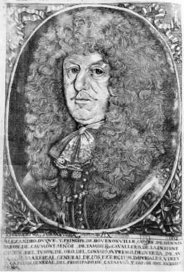
Jehan de Bournonville dit « Hamart »
° après 1369 (1390 ?) — + après 14/10/1456
Écuyer, seigneur de Cresly, Château-Briçon, Frettemeule et du Mourier.
Époux de Jeanne de Lestang ° 1400 — + après 1456.
André (Andrieu) de Bournonville
° ~1340 — + 07/1369
Chevalier, seigneur de Château-Briçon (par donation du Connétable de Fiennes, son oncle, en 1363).
Marié en 1369.
Jean II de Bournonville dit « Le Grand »
° ~1310 — + après 06/1384
Chevalier, seigneur de Bournonville, Conteville, Fouquesolles, baron & vicomte de Liannes (1350).
Chambellan de Philippe VI de Valois, Gouverneur de Boulogne & Sénéchal du Boulonnais.
Époux ~1330 de Mahaut (Mahaud) de Fiennes ° ~1305/10 — + après 02/07/1363.
Hugues de Bournonville
° ~1280 — + ?
Chevalier, seigneur de Bournonville, homme d’armes sous le Connétable de Fiennes (1366), Gouverneur de Thérouanne.
Époux de Yolande de Liannes dite « de Beaurains ».
Jean Ier de Bournonville
° ~1249 — + ~1334
Chevalier, seigneur de Bournonville.
1) Époux ~1280 de Ide de Bernieulles (+ 20/03/1301)
2) Époux après 1301 de Jeanne de Bailleul (+ 17/10/1333)
Roger de Bournonville
° ~1214/15 — + ~1259
Chevalier, seigneur de Bournonville, Chambellan du Boulonnais.
Époux 1) Aleide (Adélaïde, Alix) de Longvilliers-Cayeu (+ ~1249)
Époux 2) Péronne d’Ollehain ° 24/06/1231 — + 30/04/1288
Robert de Bournonville
° 1171 — + ?
Chevalier, seigneur de Bournonville, croisé.
Époux en 1213 de Guyotte d’Abbeville.
Pierre de Bournonville dit « Le Valeureux / Le Vaillant / Le Guerrier »
° ~1125/28 — + ~1199
Chevalier, seigneur de Bournonville, Sénéchal du Boulonnais (1196).
Signe la Coutume d’Ambleteuse en 1190.
Époux de Mathilde de Saint-Omer (+ 21/07/1194).
Eustache de Bournonville
° ~1096 — + 1150
Chevalier, seigneur de Bournonville.
Époux ~1120 de Aldegonde de Renty.
Louis Ier de Bournonville
° ~1080 — + 1126
Seigneur de Bournonville (rebâtit le château).
Époux de Sylvie de Normandie, dame de Coquelle (+ 15/08/1126).
Gérard Ier de Bournonville
fl. 1035 — + peu après 1084
Chevalier, seigneur de Bournonville.
Époux de Elemburge d’Esclis (ou de Selis), dame de Seclin.
Famille de Guînes – Lien avec les comtes de Boulogne
Guillaume de Guînes dit « Le Brun »
fl. 1040 — + 1071
Chevalier, seigneur de Bournonville (érige le premier château).
Époux ~1059 de Adélaïde de Hesdin.
Famille de Guînes — plusieurs personnages aux XIᵉ, XIIᵉ et XIIIᵉ siècles :
Gérardus de Burnulvilla (1084), Pierre de Bornoville (1184), barons du comte de Boulogne Renaud de Dammartin (1209).
Lignée carolingienne – Jusqu’à Charlemagne
Par les comtes de Flandre, d’Artois et de Hainaut, la filiation remonte à Charlemagne et au‑delà.
Sources :
Registres d’état civil et paroissiaux (BMS)
Archives départementales du Pas‑de‑Calais
AGP, Géné 62, GGRN, Nord Généalogie
Racineshistoire, Familles du Boulonnais, Archives Beaulaincourt
Famille de Bournonville – Suite et fin
Guillaume de Guînes dit « Le Brun »
fl. 1040 — + 1071
Chevalier, seigneur de Bournonville ; érige le premier château de Bournonville.
Donation à l’Abbaye de Thérouanne par charte de 1071 (fausse).
Époux ~1059 de Adélaïde de Hesdin (fille de Gérard ou d’Enguerrand ?).
Famille de Guînes – Chronique de Lambert d’Ardres
Guillaume de Guînes, sur la destinée duquel la Chronique de Lambert d’Ardres apporte de nombreux détails,
est cité comme l’un des seigneurs influents du Boulonnais au XIᵉ siècle.
Plusieurs membres de la famille de Guînes apparaissent dans les chartes médiévales :
— Gérardus de Burnulvilla (1084)
— Pierre de Bornoville (1184), bienfaiteur de l’abbaye de Liques
— Barons du comte de Boulogne Renaud de Dammartin (1209)
Origines anciennes – Filiation carolingienne
Par les comtes de Flandre, d’Artois et de Hainaut, la filiation remonte à Charlemagne et aux lignées
carolingiennes, mérovingiennes et parfois même troyennes selon certaines traditions généalogiques anciennes.
Les généalogies médiévales, bien que parfois embellies, permettent de relier plusieurs familles nobles du
Boulonnais aux grandes maisons féodales du Nord de la France, dont :
— les Fiennes
— les Saint-Omer
— les Renty
— les Bailleul
— les Lestang
— les Longvilliers
— les Boubers / Abbeville
Notes historiques
Les lignées de Bournonville, du Blaisel, de Parenty, de Marcotte et d’Obert se croisent dans les archives
paroissiales, les registres notariés et les chartes féodales du Pas-de-Calais, de l’Artois et du Boulonnais.
Les documents cités incluent :
— Registres BMS (Baptêmes, Mariages, Sépultures)
— Archives départementales du Pas-de-Calais
— Archives de Saint-Omer
— Registres de fiefs (Bayenghem, Seninghem, Helfaut)
— Chartes féodales (XIIᵉ–XVIᵉ siècles)
— Chronique de Lambert d’Ardres
— Racineshistoire (PDF Bournonville)
— Familles du Boulonnais (Beaulaincourt)
Conclusion généalogique
La généalogie d’Anabelle et Victorine Lemaire, par leur ascendance maternelle (Codevelle, Robe, Obert, Bourel,
Marcotte, Bournonville, Guînes), traverse plus de quinze générations documentées, remontant jusqu’aux
familles féodales du Moyen Âge et aux lignées carolingiennes.
Cette filiation, bien que parfois lacunaire ou sujette aux interprétations des généalogistes anciens,
s’appuie sur des sources solides : actes paroissiaux, registres notariés, chartes féodales, archives
départementales et travaux généalogiques reconnus.
Elle constitue un patrimoine historique remarquable, témoignant de l’enracinement ancien de ces familles
dans le Pas-de-Calais, l’Artois et le Boulonnais.
Suite de la lignée de Guînes – Notes finales
Guillaume de Guînes, dont la Chronique de Lambert d’Ardres relate la vie et les actions,
est l’un des personnages les plus marquants de la noblesse du Boulonnais au XIᵉ siècle.
La chronique mentionne notamment :
— ses campagnes militaires,
— ses alliances féodales,
— ses donations aux abbayes locales,
— son rôle dans la structuration des fiefs du Boulonnais.
Les familles de Guînes, de Bournonville, de Fiennes, de Saint‑Omer et de Renty
sont étroitement liées par des alliances, des successions et des partages de terres
entre les XIᵉ et XIVᵉ siècles.
Transmission des fiefs et lignées féodales
Les documents médiévaux montrent que les fiefs de Château‑Briçon, Cresly, Frettemeule,
Fouquesolles, Liannes, Conteville, Beaurains et Bournonville ont été transmis par héritage
ou par donation entre les différentes branches de la famille.
Les alliances avec les maisons de :
— Longvilliers,
— Hesdin,
— Abbeville,
— Boubers,
— Lestang,
— Bailleul,
— Renty,
— Dampierre,
— Saint‑Omer,
— Fiennes,
ont renforcé la position de ces familles dans le Nord de la France.
Filiation carolingienne – Synthèse
La filiation carolingienne, bien que parfois sujette à caution dans les généalogies anciennes,
est néanmoins documentée à partir de Gérard Ier de Bournonville (XIᵉ siècle),
dont les alliances permettent de remonter aux comtes de Flandre, d’Artois et de Hainaut.
Ces lignées conduisent à :
— Charlemagne (747‑814), roi des Francs, empereur d’Occident,
— Pépin le Bref,
— Charles Martel,
— et aux familles mérovingiennes antérieures.
Les généalogies médiévales relient souvent les familles nobles du Boulonnais
aux grandes maisons carolingiennes, ce qui explique la présence de ces filiations
dans les travaux généalogiques anciens.
Conclusion générale
La généalogie d’Anabelle et Victorine Lemaire, par leur ascendance maternelle
(Codevelle, Robe, Obert, Bourel, Marcotte, Bournonville, Guînes), couvre plus de
quinze générations documentées.
Elle traverse :
— l’époque contemporaine,
— la période révolutionnaire,
— l’Ancien Régime,
— le Moyen Âge féodal,
— et remonte jusqu’aux lignées carolingiennes.
Ce patrimoine généalogique est exceptionnel : il témoigne de l’ancienneté
et de la continuité des familles du Pas‑de‑Calais, de l’Artois et du Boulonnais.
Sources principales :
— Archives départementales du Pas‑de‑Calais
— Registres paroissiaux (BMS)
— Racineshistoire (PDF Bournonville)
— Familles du Boulonnais (Beaulaincourt)
— Chronique de Lambert d’Ardres
— Généalogies anciennes (AGP, Géné 62, GGRN)
Suite Bodogisel – Généalogie Dominique Lemaire
Suite Bodogisel
Bodogisel III d’Austrasie
Bodogisel IIIème d’Austrasie, né vers 555 à Angoulême et massacré en 589 à Carthage alors qu’il rentrait de Constantinople — Duc des Francs de Rhénanie – Gouverneur de l’Aquitaine.
Épouse avant 582 : Chrodoare la Suèves, née vers 560 et décédée avant 634.
Mummolin de Soissons
Mummolin de Soissons, né en 530 ou 535 à Köln, décédé en avril 566 à Soissons — 1er Comte de Soissons, Ambassadeur des Francs à Constantinople en 539.
Épouse : Palatina d’Angoulême, née vers 540, fille de Maurillion d’Angoulême et de Née von Thüringen.
Mundéric d’Austrasie
Mundéric d’Austrasie, né entre 485 et 490, décédé fin 533 — Seigneur de Vitry-en-Perthois.
Épouse : Arthémia de Genève / von Köln, née vers 505, fille de Florentin de Genève et Arthémie de Lyon.
Chlodéric Ier de Cologne
Chlodéric Ier de Cologne, né entre 477 et 485, décédé entre 508 et 510 — 2ème Roi des Francs de Rhénanie.
Épouse : Née Agilolfinger, née en 475, fille de Theodon in Bayern et Reginopirge.
Sigebert Ier de Cologne
Sigebert Ier de Cologne, né vers 455, décédé en forêt de Buconia entre 507 et 509 — 3ème Roi des Francs de Cologne, et en 496 1er Roi des Francs de Rhénanie.
Chlodebaud de Cologne
Chlodebaud de Cologne, né vers 420, décédé en 483 — 2ème Roi des Francs de Cologne.
Chlodion de Thérouanne
Chlodion de Thérouanne, né entre 392 et 398, décédé entre 447 et 448 — 2ème Roi des Francs de Thérouanne, 2ème Roi des Francs Saliens (428), 1er Roi des Francs du Cambrésis (433).
Theodemir de Toxandrie
Theodemir de Toxandrie, né entre 370 et 374 à Constantinople, assassiné le 15 août 414 à Rome avec sa mère.
Épouse en 397 : Blesinde von Köln, née vers 375.
Richomer de Toxandrie
Richomer de Toxandrie, né en 350, décédé entre 384 et 393 à Constantinople — Consul romain du Bas-Empire en 384.
Mellobaud Ier de Toxandrie
Mellobaud Ier de Toxandrie, né entre 320 et 322, décédé vers 380 à Worms — Chef des Francs en Toxandrie, 1er Roi des Francs de Worms, consul romain.
Malaric Ier de Toxandrie
Malaric Ier de Toxandrie, né vers 295, décédé entre 360 et 363 — Chef des Francs en Toxandrie, 1er Roi des Francs de Toxandrie.
Épouse : Ascyla van Belgie, née vers 295 — surnommée Ascyla la Gauloise.
Merogais des Sicambres
Merogais des Sicambres, né vers 270 dans le Vexin, décédé vers 307 — Roi des Francs Saliens, Roi des Francs Bructères.
Gonobaud Ier de Toxandrie
Gonobaud Ier de Toxandrie, né vers 245 à Tongeren, décédé en 289 — Roi des Francs Sicambres.
Marcomir des Sicambres
Marcomir des Sicambres, né en 220 à Tongeren, décédé en 281 — Roi des Francs Sicambres.
Battaire des Sicambres
Battaire des Sicambres, né vers 205 en Palestine, décédé vers 272 — Roi des Francs Sicambres du Ripuaires.
Childéric des Sicambres
Childéric des Sicambres, né vers 180 ou 183, décédé en 253 — Roi des Francs Sicambres.
Sunno des Sicambres
Sunno des Sicambres, né vers 168, décédé en 213 — Roi des Francs Sicambres.
Pharabert des Sicambres
Pharabert des Sicambres, né vers 140, décédé en 220 — Roi des Francs Sicambres.
Chlodomir IV des Sicambres
Chlodomir IV, né vers 120, décédé en 166 — Roi des Francs Sicambres.
Marcomir IV des Sicambres
Marcomir IV, né vers 100, décédé en 167 — Roi des Francs Sicambres (Celto-Germanique).
Rigemer des Sicambres
Rigemer / Richemir, né vers 65, décédé vers 114 — Roi des Francs Sicambres.
Rattaire de Lorraine
Rattaire (Ratherius) de Lorraine, né vers 37, décédé vers 89 — 23ème Roi des Français.
Après la mort de son père, il régna 21 ans. Il voulut venger sa mort et mena plusieurs guerres contre les Gaulois, remportant de nombreuses victoires. Il fit construire de grands édifices et renouvela l’alliance avec les Saxons, Germains et Thuringiens.
L’an 2 de son règne, l’Empereur Néron lança la première persécution contre les Chrétiens.
Il mourut en 89 après J‑C et fut enterré dans la cité de Ratherdama.
Anténor IV de Lorraine
Anténor IV de Lorraine, né vers 30 et décédé vers 69.
Chlodomir III – Roi des Francs
Chlodomir III, né vers -18 avant J‑C, décédé vers 63 après J‑C.
Marcomir III – Roi des Francs Sicambres
Marcomir III, décédé vers 50 après J‑C.
Claudius II
Claudius II — Ancêtre mentionné dans la lignée des Francs.
Francus Ier
Francus Ier — figure fondatrice dans les récits des Francs.
Antharius
Antharius — Ancêtre des Francs.
Merodachus
Merodachus — Ancêtre des Francs.
Clodomir II
Clodomir II — Ancêtre des Francs.
Antenor III
Antenor III — Ancêtre des Francs.
Chlodius II
Chlodius II — Ancêtre des Francs.
Marcomir Sicambres
Marcomir Sicambres — Ancêtre des Francs Sicambres.
Nicanor
Nicanor — Ancêtre des Sicambres.
Antenor II
Antenor II — Roi des Francs Sicambres.
Marcomir I (Bassanus Magnus)
Marcomir I (Bassanus Magnus), né vers -320, décédé vers -250 — Roi des Cimmériens.
Épouse : Orcades, Reine des Sicambres.
Antenor I
Antenor I, décédé vers -294.
Diocles des Sicambres
Diocles, né vers -365, décédé vers -298 — Roi des Sicambres.
Diocles régna 39 ans. Il mena de nombreuses guerres contre les Gaulois et repoussa une invasion des Goths venus de Scandinavie. Plus de 100 000 Goths périrent, ainsi que 260 000 hommes du camp des cinq Rois alliés.
Les Gaulois furent vaincus : sur 88 000, seuls 10 000 survécurent. Parmi les Sicambres, 4 000 moururent, dont trois Ducs : Marcomir, Hélénus et Anthénor.
Il laissa quatre fils : Hélénus, Priam, Nicanor et Basan.
Helenus V
Helenus V, né vers -390, décédé vers -337.
Priamos V
Priamos V, né vers -415, décédé vers -358 — Roi des Francs Sicambres.
Antenor II
Antenor II, né vers -440, décédé vers -384 — Roi des Francs.
Marcomir – Roi des Cimmériens
Marcomir, né vers -470, décédé vers -412 — Roi des Cimmériens.
Épouse : Leah, Reine des Sicambres.
Antenor IV / II des Cimmériens
Antenor IV / II, né vers -512, décédé vers -442.
Helenus IV
Helenus IV — Ancêtre des Sicambres.
Priam IV
Priam IV — Ancêtre des Sicambres.
Marcomir
Marcomir — Ancêtre des Sicambres.
Dilulius II
Dilulius II, né vers -635, décédé vers -560 — Roi des Cimmériens.
Plaserius III
Plaserius III, né vers -650, décédé vers -580 — Roi des Cimmériens.
Dilulius I
Dilulius I, né vers -600, décédé vers -565.
Almadius I
Almadius I, né vers -675, décédé vers -595 — Roi des Cimmériens.
Gentilanor V
Gentilanor V — Ancêtre des Cimmériens.
Priamos III (Priam III)
Priamos III, dit Des Cimmériens, dit Des Cimbres, dit De Troie.
Alexandre (Alexandros) – De Troie
Alexandre / Alexandros, né vers -747, décédé vers -677 — Ancêtre de Troie.
Basabiliano II – De Troie
Basabiliano II — Ancêtre de Troie.
Plaserio II – De Troie
Plaserio II — Ancêtre de Troie.
Plaserio I – De Troie
Plaserio I — Ancêtre de Troie.
Basabiliano I – De Troie
Basabiliano I — Ancêtre de Troie.
Gelio / Selio / Zelius – De Troie
Gelio / Selio / Zelius — Ancêtre de Troie.
Esdron – De Troie
Esdron — Ancêtre de Troie.
Francus – De Troie
Francus — Ancêtre mythique des Francs.
Genger – De Troie
Genger / Zenter, vers -1190 — Ancêtre de Troie.
Helenus d’Épire
Helenus d’Épire — Ancêtre de Troie.
Podarces (Priam) – Roi de Troie
Podarces / Priam, Roi de Troie vers -1140.
Laomedon – Roi de Troie
Laomedon, Roi de Troie vers -1160.
Ilos – Fondateur de la dynastie de Troie
Ilos, fils de Tros, fondateur de la dynastie de Troie vers -1220.
Tros
Tros, né vers -1270 — Ancêtre majeur de Troie.
Erichtonios Ier
Erichtonios Ier, né vers -1320.
Dardanos – Fondateur de la dynastie de Troie
Dardanos, né vers -1370 — Fondateur de la dynastie de Troie.